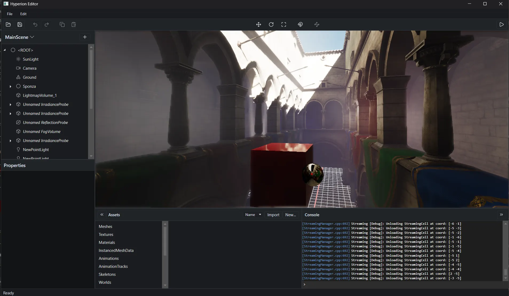
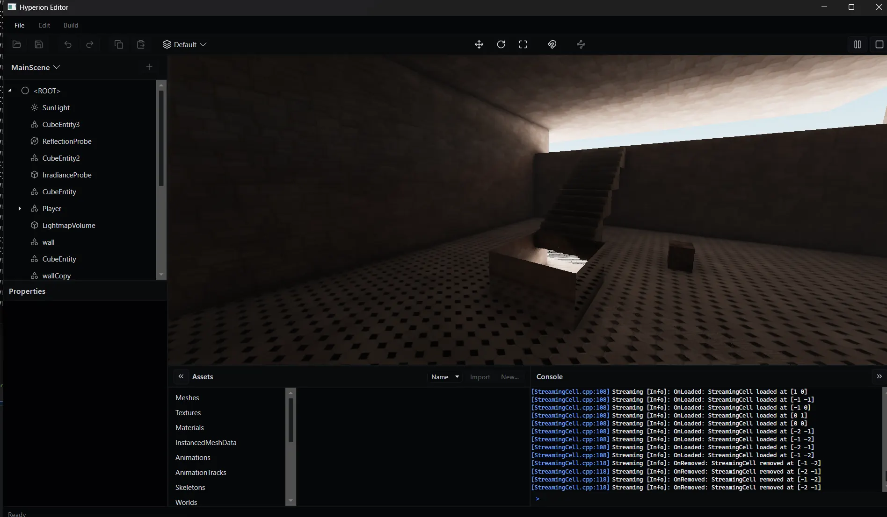

Hyperion
An open-source 3D game engine written in C++ 20, a decade in the making
Licensed MIT.
Hyperion started as a passion project in 2016, and is still worked on daily.
Our aim with Hyperion is to offer a high fidelity gaming experience even on low-end hardware using our in-house baking system to prepare as much of the lighting and effects as possible ahead of time.
That, and the editor shouldn't suck.
Screenshots
{kind=link}

{kind=link}

Features
-
Global illumination
Offline baker — bake lightmaps ahead of time, so games still run on potato computers.
Screen-space — SSGI, SSR, and HBAO with no precompute.
Ray-traced — DDGI probes and reflections on GPUs that can handle it.
Path tracer — full path tracing for reference-quality results.
-
GPU-driven rendering
Occlusion culling runs in compute and feeds indirect draws directly, including for GPU-simulated particles.
-
Strata scripting
Strata is a compiled, LLVM-backed language that recompiles live on save.
-
World streaming
Grid layers load cells in and out on a background thread as the player moves, so there are no loading screens between zones.
-
Physics
Rigid bodies run on Jolt. The character controller handles coyote time, jump buffering, slopes, steps, and pushing.
Platforms
| Target | Status |
|---|---|
| Windows | Supported |
| macOS | Supported |
| Android | Supported (NDK 29, arm64-v8a, API 28+) |
| iOS | Supported |
| Steam Deck | Via Proton |
| Linux | Planned, not in active development |
Editor runs on Windows and macOS only.
Get started
Building
Build steps live in the repository: Documentation/CompilingTheEngine.md.
License
MIT licensed. Copyright The Hyperion Contributors.
Get involved
We welcome contributors of all skill levels. If you find a bug, have an idea, or want to help contribute to the project, we'd love your support!